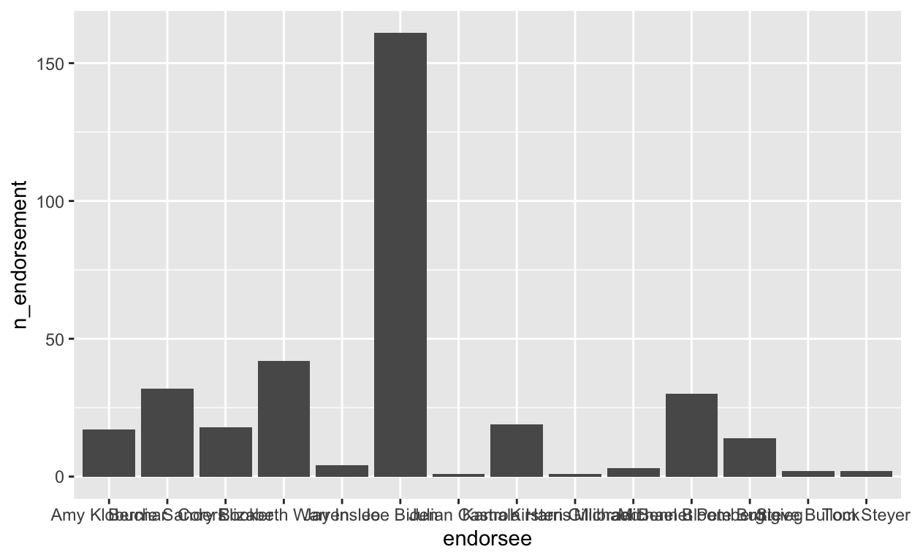

Introduction
Regardless of your programming language of preference, data visualization is paramount to understanding complex patterns in data. However, there are many steps that need to be taken before we can visualize the data. This tutorial offers an illustration of the entire data visualization process in R and Python. To illustrate the process from importing to visualizing data, we will use data from the FiveThirtyEight Presidential Endorsement Tracker.
This tutorial provides a very brief overview of:
- Importing and summarizing data
- Preparing data for visualization
- The next step: basic visualization with barplots and faceting
Prerequisites
Given this focus on outlining the process of visualizing data, this tutorial does not offer a comprehensive explanation of the principles underlying data visualization. Some prior knowledge of data wrangling/visualization in either language before starting this tutorial is recommended before going through the examples in this tutorial. For an overview of tidyverse tools in R that will be useful to brush up on before starting this tutorial, you can go through some of the tidyverse primers from RStudio.
Packages and Libraries
This tutorial uses several packages from the tidyverse library in R, as well as the reticulate package which provides a comprehensive set of tools for interoperability between Python and R. The Python libraries utilized in this tutorial are pandas for importing, summarizing, and manipulating data and plotnine for data visualization.
After installing the packages in R, use the following code chunk to load the packages:
library(tidyverse)
library(foreign)
library(reticulate)
library(fivethirtyeight)Use the following code to import the relevant Python libraries:
import pandas as pd
import numpy as np
from plotnine import ggplot, geom_bar, aes, stat_smooth, facet_wrapAcknowledgments and Notes
Parts of this tutorial are adapted from material used in workshops run by the Hertie Data Science Lab in Berlin, where I work on as a Teaching Assistant to Therese Anders and other instructors from the Hertie School of Governance.
Note: In this version of the tutorial, all code in Python is not run due to errors in knitting the .Rmd file. For this reason, all exercises in this version are in R. Please feel free to submit an issue if you find any errors in the code for this tutorial.
About the data
In this tutorial, we will use data from the FiveThirtyEight Presidential Endorsement Tracker, which records endorsements of American presidential primary candidates from current/former government officials and high-ranked political party members (i.e. members of the Democratic National Convention). For this dataset, an endorsement is defined as a “public display or pronouncement of support that articulates or strongly implies that a candidate is an endorser’s current No. 1 choice for president”. This means that there is only one endorsement linked to each endorser, and that they can change over the course of the primary season. In the case of ambiguities, Five Thirty Eight reaches out to offices of the candidates and endorsers for a clarification.
In this model, endorsements are “ranked” by their perceived relative value based on their current/former position. For the 2020 Democratic Presidential Primaries, it comprises of the following:
- Current and former presidents and vice presidents (10 points).
- Current party leaders: Nancy Pelosi (House speaker), Steny Hoyer (House majority leader), James Clyburn (House majority whip), Chuck Schumer (Senate minority leader), Dick Durbin (Senate minority whip) and Tom Perez (Democratic National Committee chair) (10 points).
- Current governors, including governor equivalents from the U.S. territories and Washington, D.C.1 (8 points).
- Current U.S. Senators (6 points).
- Past presidential and vice presidential nominees (5 points).
- Former party leaders2 (5 points).
- Former 2020 presidential candidates who appeared in at least one debate and have since dropped out (5 points).
- Current U.S. representatives, including non-voting delegates from U.S. territories (3 points).
- Mayors of cities with at least 300,000 people (3 points).
- Officials holding statewide or territory-wide elected office, excluding positions (e.g. commissioners) that are held by multiple people at once (2 points).
- State and territorial legislatures’ majority and minority leaders (2 points).
- Other DNC members (1 point).
The dataset contains the following variables:
date: date endorsement took placeposition: endorser’s position in governmentstate: origin state of endorserendorser: individual who is endorsing a presidential candidateendorsee: presidential candidate endorsedendorser.party: political party of the endorsersource: link to endorsement (if applicable)category: broader category of endorsee based on position (used to calculate points, see above)points: # of “endorsement points” attributed to the endorser (see above for more details)
Importing data
Reading .csv files from a URL
Most data formats we commonly use are not native to R or Python and need to be imported. One of the ways we can import this data is to read in a .csv file from a URL. Here, we use the foreign package in R and pandas library in Python to read a .csv file and import data frames.
library(foreign)
url <- "https://projects.fivethirtyeight.com/endorsements-2020-data/endorsements-2020.csv"
dat <- read.csv(url)The equivalent code in Python is:
import pandas as pd
url = "https://projects.fivethirtyeight.com/endorsements-2020-data/endorsements-2020.csv"
dat = pd.read_csv(url)An alternative method of importing data from FiveThirtyEight in R
Alternatively, we can use the fivethirtyeight package in R to import data. It is important to note that the same dataset imported from different sources may differ, as sources are often updated separately.
library(fivethirtyeight)
dat1 <- fivethirtyeight::endorsements_2020Summarizing data
Retrieving an overview of the data
Before we prepare data for visualization, it is generally a good idea to understand what we’re working with. In R and Python, some functions for summarizing data are as follows:
| R | Python | Function |
|---|---|---|
summary(dat) |
dat.describe() |
Produces an overview of the data |
head(dat) |
dat.head() |
Returns the first few rows of a data frame |
tail(dat) |
dat.tail() |
Returns the last few rows of a data frame |
dim(dat) |
dat.shape() |
Retrieves the dimensions of the data |
str(dat) |
dat.info() |
Displays the structure of a data frame |
Exercise 1 - Understanding the data
Run each code chunk and answer the questions below.
summary(dat)head(dat)dim(dat)Cross-tabulations
To fully understand the data we are working with, it is also important to look at frequency tables for individual variables.
Let’s suppose we want to know more about which category of politician has given out the most endorsements. In R, we can retrieve this data using the following code:
table(dat$category)In Python, we can use the pandas value_counts() function on our column of interest to retrieve frequency counts.
dat['category'].value_counts()Exercise 2 - Creating a cross-tabulation
Let’s suppose we want to know about who has the most endorsements to date (endorsee). Retrieve the frequency counts from the corresponding variable in data frame dat.
Exercise 3 - Interpreting the results of a cross-tabulation
##
## Amy Klobuchar Bernie Sanders
## 676 17 32
## Cory Booker Elizabeth Warren Jay Inslee
## 18 42 4
## Joe Biden Julian Castro Kamala Harris
## 161 1 19
## Kirsten Gillibrand Michael Bennet Michael Bloomberg
## 1 3 30
## Pete Buttigieg Steve Bullock Tom Steyer
## 14 2 2Preparing data for visualization
In practice, data visualization is only the last part in a long stream of data gathering, cleaning, wrangling, and analysis. Only a very brief overview of the data wrangling tasks necessary for the illustrated example are elaborated, so if you do not have a strong background in data wrangling in R, RStudio offers a great data wrangling cheat sheet for your perusal.
dplyr 101
dplyr uses a strategy called “Split - Apply - Combine” for data mining. Some of the key functions include:
select(): Subset columns.filter(): Subset rows.mutate(): Change or add columns to existing data.group_by(): Converting data frames to grouped tablessummarize(): Summarizing data set.arrange(): Reorders rows.
We can use select() and filter() to subset the 2020 Presidential Endorsement data in R, and mutate() to change variable types:
dat_subset <- dat %>%
# Selecting columns
dplyr::select(date,
endorser:source,
category,
points
) %>%
# Excluding columns (but keeping all others)
dplyr::select(-source) %>%
# Filtering out NAs (a.k.a. missing values)
dplyr::filter(!is.na(endorsee)) %>%
# Changing the class of variables
dplyr::mutate(points = as.numeric(points),
endorsee = as.factor(endorsee)) # factor variables are ideal for categories To prepare data for visualizing the number of endorsements per candidate, group_by(), summarize() and arrange() are particularly useful.
by_endorsee <- dat_subset %>%
# Using group_by() to create grouped data frame of endorsees
dplyr::group_by(endorsee) %>%
# Using summarize to generate # endorsements per candidate variable
dplyr::summarize(n_endorsements=n()) %>%
# Using arrange to order # endorsements from highest to lowest
dplyr::arrange(n_endorsements)What is the Python equivalent of dplyr functions?
Good question! Anything you can do with dplyr in R, you can also do with pandas in Python.
Using the 2020 Democratic Endorsement Primary data, some parallel examples are shown below.
Filter
R
filter(dat_final, year >= 2019)
filter(dat, state=="NY")
filter(dat, state %in% c("NY","CA","TX"))Python
dat_final[(dat_final['year'] >= 2019)]
df[dat['state'] == 'NY']
df[(dat.state == 'NY') | (dat.state == 'CA') | (dat.state == 'TX')]
# Alternative solution to the third
filter_list = ['NY', 'CA', 'TX']
df[dat.state.isin(filter_list)] Select
R
select(dat, endorser, endorsee)
select(dat, -source)Python
dat[['endorser', 'endorsee']]
dat.drop('source')Arrange
R
arrange(dat, points)
arrange(dat, desc(points))Python
dat.sort_values('points')
dat.sort_values('points', ascending=False)Grouping
R
dat %>% group_by(endorsee)
dat %>% group_by(endorsee, year)
dat %>% ungroup()Python
dat.groupby('endorsee')
dat.groupby(['endorsee', 'year'])
dat.reset_index()
# Alternatively,
dat.groupby('group1', as_index=False)Creating new data frames with grouping and summarizing
R
dat %>% group_by(endorsee) %>% summarise(mean_points = mean(points),
sum_points = sum(points))
dat %>%
group_by(endorsee, year) %>%
summarise(n_endorsements = n(),
mean_points = mean(points),
sum_points = sum(points)) Python
dat.groupby('endorsee')['points'].agg({'mean_points' : np.mean()})
dat.groupby(['endorsee', 'year'])['points'].agg(['mean', 'sum'])tidyr 101
Data typically does not come in the format that we need for visualization. In general, we want data in the following format:
- Each variable forms a column.
- Each observation forms a row1.
- For panel data, the unit (e.g. country) and time (e.g. year) identifier form columns.
For wide data formats, each unit’s responses are in a single row. For example:
| Candidate | # Endorsements 2019 | # Endorsements 2020 |
|---|---|---|
| Joe Biden | 51 | 66 |
| Bernie Sanders | 24 | 8 |
| Elizabeth Warren | 23 | 17 |
For long data formats, each row denotes the observation of a unit at a given point in time. For example:
| Candidate | Year | # Endorsements |
|---|---|---|
| Joe Biden | 2019 | 51 |
| Joe Biden | 2020 | 66 |
| Bernie Sanders | 2019 | 24 |
| Bernie Sanders | 2020 | 8 |
| Elizabeth Warren | 2019 | 23 |
| Elizabeth Warren | 2020 | 17 |
It is important to note that we want our data to be in long format for visualization.
Exercise 4 - long vs. wide format
Reshaping data
Let’s suppose our data is not in the correct format for visualization and we need to change it from wide to long format. The tidyr package in R offers two main functions for data reshaping:
pivot_longer(): Shaping data from wide to long.pivot_wider(): Shaping data from long to wide.
The syntax for pivot_longer() is:
new_df <- pivot_longer(old_df, columns to transform, names_to = "name", values_to = "value")
Similarly, the syntax for pivot_wider() is:
new_df <- pivot_wider(old_df, names_from = key, values_from = value)
Let’s suppose our final dataset is in the wide format (dat_wide). Run the following code chunk to change it into long format to prepare for visualization and view the first few rows of the resulting dataset.
dat_long <- pivot_longer(dat_wide,
`2019`:`2020`,
names_to = "year",
values_to = "n_endorsement")
dat_longIn Python, we can convert a data frame from the wide to long format using pandas.wide_to_long().
dat_long = pd.wide_to_long(dat_wide, ['2019','2020'], i="year", j="n_endorsement")tidyr::separate()
A function that is particularly useful for data preparation is tidyr::separate(), which separates a single column into multiple columns.
For the Presidential Primary Endorsement data, we can use this function to create a variable indicating in which year an endorsement took place.
dat_separate <- dat_subset %>%
tidyr::separate(date,c("year","month","day"),sep="-")## Warning: Expected 3 pieces. Missing pieces filled with `NA` in 676 rows
## [347, 348, 349, 350, 351, 352, 353, 354, 355, 356, 357, 358, 359, 360, 361,
## 362, 363, 364, 365, 366, ...].The str.split() function from the pandas library is the Python version of tidyr::separate().
dat_separate = dat
dat_separate[['year','month','day']] = dat_separate.date.str.split("-",expand=True) Putting it all together
With the year variable that we coded, we can create a grouped data frame with frequency counts for endorsements by year.
After using tidyr::separate() to separate columns, we can use dplyr functions to finalize preparation of data for visualization in R:
dat_final <- dat_subset %>%
# Separate `date` into `year`, `month` and `day` columns
tidyr::separate(date,c("year","month","day"),sep="-",) %>%
# Remove `month` and `day` columns from data frame
dplyr::select(-c("month","day")) %>%
# Create data frame grouped by endorsee-year
dplyr::group_by(endorsee,year) %>%
# Tabulate frequency for # endorsements per endorsee-year
dplyr::summarize(n_endorsement=n()) %>%
# Filter out first row with NAs
dplyr::filter(endorsee!="")To create this data frame in Python, we can use the following lines of code:
dat_final = dat
dat_final[['year','month','day']] = dat_final.date.str.split("-",expand=True)
dat_final = dat_final.drop(columns=['month', 'day'])
dat_final = dat_final.groupby(['endorsee','year']).aggregate({'endorsee':'count'})Using the reticulate package from R, we can compare the output from both programming languages by calling py$dat_final in an R code chunk. A demo of this comparison will be added to this tutorial at a later date.
Exercise 5 - Finalizing data for visualization
Run the following code chunk to create dat_long excluding rows with NA values for the n_endorsement column, and to view the final data frame we will use for visualization.
# create final data frame
dat_final1 <- pivot_longer(dat_wide,
`2019`:`2020`,
names_to = "year",
values_to = "n_endorsement") %>%
dplyr::filter(!is.na(n_endorsement))
# View new data frame
dat_final1Time to visualize :)
Now we’re finally ready to visualize. Yay!

Barplots and Faceting
Now that we have our data frame ready for visualization, let’s look at some examples of what we can do with the Presidential Primary Endorsement data. This section is solely meant for instructional purposes. For a deeper dive into data visualization in R, you can check out this tutorial on data visualization basics from RStudio.
Barplots
In R, the ggplot2 package was developed by Hadley Wickham based on Leland Wilkinson’s “grammar of graphics” principles. According to the “grammar of graphics,” you can create each graph from the following components: “a data set, a set of geoms–visual marks that represent data points, and a coordinate system” (Wilkinson 2012). You can access the data visualization with ggplot2 cheat sheet here.
For most applications, the code to produce a graph in ggplot2 is roughly structured as follows:
ggplot(data = , aes(x = , y = , color = , linetype = )) +
geom() +
[other graphical parameters, e.g. title, color schemes, background]
ggplot(): Function to initiate a graph inggplot2.data: Specifies the data frame from which the plot is produced.aes(): Specifies aesthetic mappings that describe how variables are mapped to the visual properties of the graph. The minimum value that needs to be specified (for univariate data visualization) is thexparameter, wherexspecifies the variable to be plotted on the x-axis. Analogously, theyparameter specifies the variable to be plotted on the y-axis. Other examples include thecolorparameter, which specifies the variable to be onto different colors, or thelinetypeparameter, which specifies the variable to be mapped onto different line types in case of line graphs.geom(): Specifies the type of plot to use. There are many different geoms (“geometric objects”) to be specified with thegeom()layer. Some of the most common ones includegeom_point()for scatterplots,geom_line()for line graphs,geom_boxplot()for Boxplots,geom_bar()for bar plots for discrete data, andgeom_histogram()for continuous data.
To create a barplot with ggplot2, add geom_bar() to the ggplot2 template. For example, the code below plots a bar chart of the number of endorsements attributed to each candidate to date, which comes with ggplot2.
library(ggplot2)
plot1 <- ggplot(data = dat_final,
aes(x = endorsee, y = n_endorsement)) +
geom_bar(stat="identity")
Let’s make this plot look a little cleaner by running the following code chunk:
ggplot(data = dat_final,
aes(x = reorder(endorsee,n_endorsement),
y = n_endorsement)) +
geom_bar(stat="identity") +
coord_flip()In Python, the plotnine library is an implementation of a grammar of graphics based on ggplot2. The grammar allows users to compose plots by explicitly mapping data to the visual objects that make up the plot. More information on the plotnine library here.
An example of the above chart coded in Python is as follows:
from plotnine import ggplot, geom_bar, aes, stat_smooth, facet_wrap
(ggplot(dat_final) +
aes(x='endorsee',
y = 'n_endorsement') +
geom_bar() +
coord_flip()
)Faceting
Another option to graph different groups is to use faceting. This means to plot each value of the variable upon which we facet in a different panel within the same plot. Here, we will use the facet_wrap() function. We could also use the facet_grid() which allows faceting across more than one variable.
Let’s suppose we are interested in comparing endorsements made in 2019 compared to endorsements made in 2020. Run the following code chunk to generate the relevant graph utilizing the facet_wrap() function in R.
ggplot(data = dat_final,
aes(x = reorder(endorsee,n_endorsement),
y = n_endorsement)) +
geom_bar(stat="identity") +
coord_flip() +
facet_wrap(~year,nrow=1)In Python, the code we would use for the equivalent graph is as follows:
(ggplot(dat_final) +
aes(x='endorsee',
y = 'n_endorsement') +
geom_bar() +
coord_flip() +
facet_wrap('~year')
)Recap
In this tutorial, you learned about data wrangling to prepare for visualization in R and Python. The key takeaways are:
- There are many ways to import data in
RandPython, which include URLs and packages/libraries. - It is important to understand your data before you play around with it; key aspects involve retrieving:
- An overview of the data frame
- The first few/last few rows of the data frame
- Dimensions of the data (Rows X Columns)
- Structure of the data frame and variable types
- Preparing data for visualization requires a lot of data wrangling.
- There is a world of possibilities out there when visualizing data with
ggplot2inRandplotnineinPython.
R and Python, offering more parallel examples to illustrate how we can create the same output in both languages.
Hadley Wickham (2014, “Tidy Data” in Journal of Statistical Analysis) adds another condition—“Each type of observational unit forms a table”.↩︎